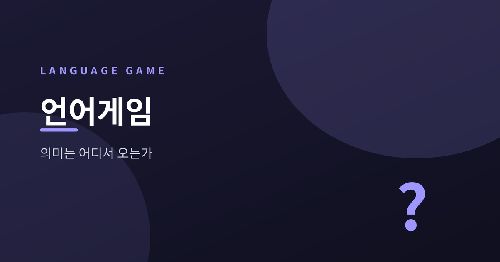
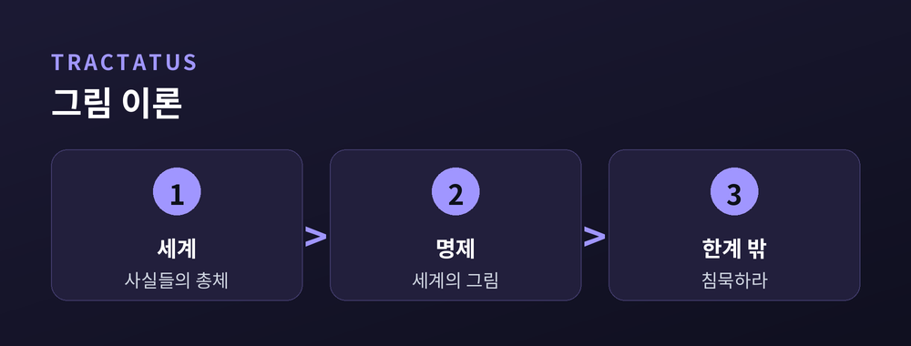
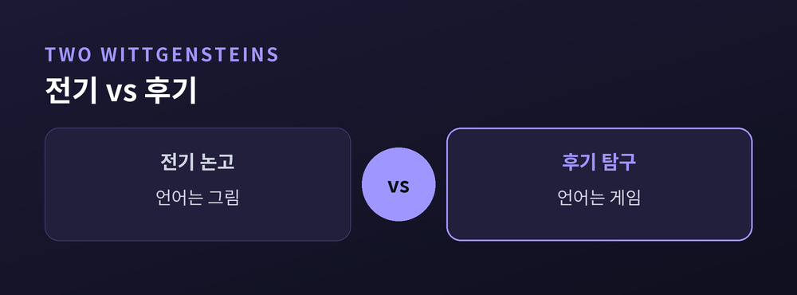
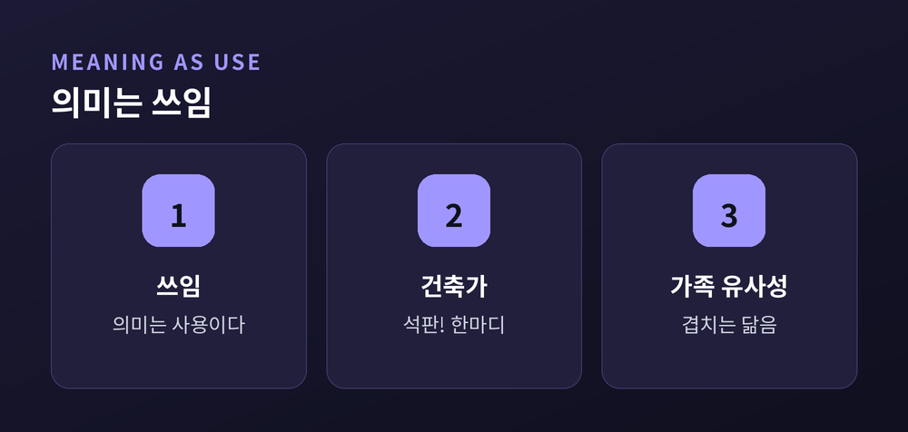
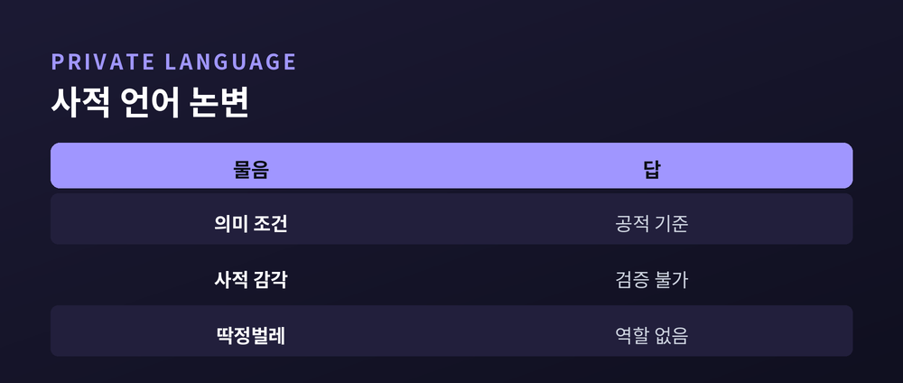

말의 의미는 어디서 오는가
이번 글에서는 루트비히 비트겐슈타인의 언어철학을 정리해 보겠습니다. 그는 한 생애 안에서 언어에 대한 생각을 완전히 뒤집은 드문 철학자입니다. "말의 의미는 어디서 오는가." 이 물음을 따라 전기와 후기를 차례로 살펴보겠습니다.

젊은 비트겐슈타인은 언어를 '그림'으로 보았습니다.
1921년에 나온 『논리철학논고』의 생각입니다. 세계는 사물의 모음이 아니라 사실들의 총체입니다. 문장은 그 사실을 그리는 논리적 그림입니다. 문장과 사태는 같은 논리적 형식을 공유합니다. 우리가 말을 한다는 것은 사물이 어떠한지를 그림으로 그리는 일인 셈입니다.
여기서 하나의 엄격한 기준이 나옵니다. 현실 속에서 그림으로 그려질 수 있는 문장만이 의미를 가진다는 것입니다.
그렇다면 윤리와 미학, 종교와 형이상학은 어떻게 될까요. 이것들은 세계 안의 사실로 환원되지 않습니다. 그래서 유의미한 언어의 경계 밖으로 밀려납니다.
『논고』는 첫 명제 "세계는 일어나는 모든 것이다"로 열고, 마지막 명제로 닫습니다. "말할 수 없는 것에 관해서는 침묵해야 한다." 언어의 한계가 곧 세계의 한계라는 선언입니다.

놀라운 일은 그다음에 벌어집니다.
비트겐슈타인은 자신의 그림 이론을 스스로 버렸습니다. 그 결과가 사후 1953년에 나온 『철학적 탐구』입니다. 예전엔 언어에 단 하나의 논리 구조가 있다고 보았습니다. 지금은 언어에 무수한 쓰임이 있다고 봅니다.
그는 언어를 '언어게임(language-game)'이라 부릅니다. 말과, 그 말이 짜여 드는 행위를 함께 묶은 개념입니다.
『탐구』에 나오는 건축가의 예가 잘 보여줍니다. 건축가가 "석판"이라고 외치면 조수가 알맞은 돌을 가져옵니다. 단 몇 개의 낱말과 협응된 몸짓만으로 하나의 완결된 언어게임이 성립합니다. 여기서 의미를 세우는 것은 지칭이 아니라 함께 하는 행위입니다.
언어게임은 하나가 아닙니다. 보고하기, 부탁하기, 농담하기, 번역하기, 감사하기처럼 그 목록은 끝이 없습니다. 각 게임에 엄격한 규칙표가 있는 것도 아닙니다. 다만 관습이 있을 뿐입니다.

후기의 핵심 명제는 짧습니다.
"낱말의 의미는 그 쓰임이다." 『탐구』 43절의 말입니다. 의미는 낱말 뒤에 숨은 대상이나 머릿속 관념이 아닙니다. 낱말이 실제로 어떻게 쓰이는가에 있습니다.
그렇다면 하나의 낱말을 묶어 주는 공통 본질은 무엇일까요. 비트겐슈타인은 그런 것이 없다고 답합니다.
'게임'이라는 낱말을 보십시오. 보드게임, 카드게임, 공놀이, 올림픽 경기에 공통된 단 하나의 특징은 없습니다. 규칙, 경쟁, 기술, 오락 같은 성질들이 겹치고 교차할 뿐입니다. 그는 이것을 '가족 유사성'이라 불렀습니다. 한 가족의 얼굴이 눈매와 걸음걸이에서 부분적으로만 닮듯이 말입니다.
우리는 낱말의 본질을 캐낼 것이 아니라, 그 쓰임을 따라 유사성의 그물망을 여행해야 합니다. 하나의 정의로 모든 것을 묶으려는 욕심을 내려놓아야 합니다.

여기서 더 깊은 물음이 나옵니다. 규칙을 '따른다'는 것은 무엇일까요.
학생에게 '2씩 더하기'로 수열을 잇게 했더니 1000 다음에 1004, 1008을 씁니다. 교정하자 학생은 "저는 똑같이 계속했는데요"라고 답합니다. 무엇이 '똑같음'인지, 규칙 자체가 정해 주지는 못합니다.
『탐구』 201절은 이를 역설로 정리합니다. 모든 행위를 규칙과 일치한다고 해석할 수 있다면, 모든 행위를 어긋난다고도 해석할 수 있습니다. 규칙은 그 적용 너머의 어떤 추상적 실체가 아닙니다. 공동체의 실천 속에서 지켜지고 교정됩니다.
여기서 '사적 언어 논변'이 이어집니다. 오직 나만 아는 감각을 지칭하는 언어를 상상해 봅니다. 그런 언어는 옳고 그름을 가릴 공적 기준이 없습니다. 검증할 길이 없다면, 그것은 규칙을 따르는 언어가 아닙니다.
상자 속 딱정벌레의 비유가 유명합니다. 각자 제 상자 속만 볼 수 있고 그 안의 것을 '딱정벌레'라 부른다면, 상자 속 내용물은 대화에서 아무 역할도 하지 못합니다. 말의 의미는 결국 홀로가 아니라 함께 쓰는 데서 옵니다.

정리하면 이렇습니다.
전기의 비트겐슈타인은 언어의 한계를 긋고 그 너머를 침묵으로 남겼습니다. 후기의 그는 그 한계 밖이 실은 또 다른 언어게임이었음을 보여주었습니다. 다만 이 전환이 모든 물음을 닫은 것은 아닙니다. '삶의 형식'이 정확히 무엇인지, 규칙 따르기의 역설을 어디까지 받아들여야 하는지는 지금도 논쟁 중입니다.
그럼에도 하나의 메시지는 선명합니다 — 말의 의미는 세계를 그리는 데서가 아니라, 우리가 함께 살아가며 그 말을 쓰는 데서 옵니다.
의미가 어디서 오느냐고 다시 물으신다면, 이렇게 답하고 싶습니다. 사전이 아니라 삶에서 온다고.
참고 소스